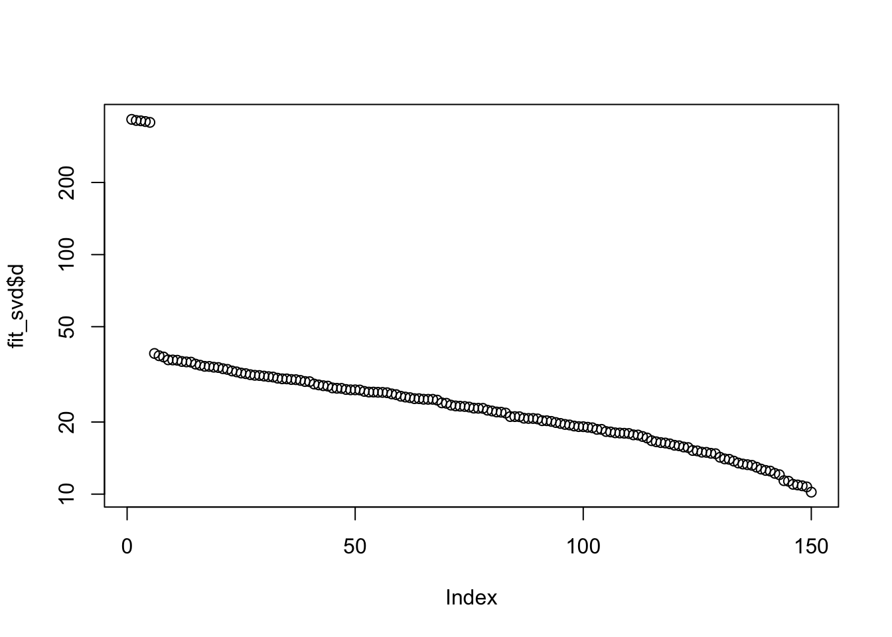

pmf_greedy_experiment
zihao12
2020-06-04
Last updated: 2020-06-05
Checks: 6 1
Knit directory: ebpmf_data_analysis/
This reproducible R Markdown analysis was created with workflowr (version 1.6.2). The Checks tab describes the reproducibility checks that were applied when the results were created. The Past versions tab lists the development history.
Great! Since the R Markdown file has been committed to the Git repository, you know the exact version of the code that produced these results.
Great job! The global environment was empty. Objects defined in the global environment can affect the analysis in your R Markdown file in unknown ways. For reproduciblity it’s best to always run the code in an empty environment.
The command set.seed(20200511) was run prior to running the code in the R Markdown file. Setting a seed ensures that any results that rely on randomness, e.g. subsampling or permutations, are reproducible.
Great job! Recording the operating system, R version, and package versions is critical for reproducibility.
- unnamed-chunk-4
To ensure reproducibility of the results, delete the cache directory pmf_greedy_experiment_cache and re-run the analysis. To have workflowr automatically delete the cache directory prior to building the file, set delete_cache = TRUE when running wflow_build() or wflow_publish().
Great job! Using relative paths to the files within your workflowr project makes it easier to run your code on other machines.
Great! You are using Git for version control. Tracking code development and connecting the code version to the results is critical for reproducibility.
The results in this page were generated with repository version 9cfba93. See the Past versions tab to see a history of the changes made to the R Markdown and HTML files.
Note that you need to be careful to ensure that all relevant files for the analysis have been committed to Git prior to generating the results (you can use wflow_publish or wflow_git_commit). workflowr only checks the R Markdown file, but you know if there are other scripts or data files that it depends on. Below is the status of the Git repository when the results were generated:
Ignored files:
Ignored: .Rhistory
Ignored: .Rproj.user/
Ignored: analysis/ebpmf_bg_tutorial_cache/
Ignored: analysis/pmf_greedy_experiment_cache/
Untracked files:
Untracked: analysis/ebpmf.alpha_v0.4.2_summary.Rmd
Untracked: analysis/get_topic_words.R
Untracked: analysis/pmf_greedy_experiment2.Rmd
Untracked: output/uci_BoW/v0.4.2/top_words_v0.4.2.csv
Unstaged changes:
Modified: analysis/plot_topic_words.R
Note that any generated files, e.g. HTML, png, CSS, etc., are not included in this status report because it is ok for generated content to have uncommitted changes.
These are the previous versions of the repository in which changes were made to the R Markdown (analysis/pmf_greedy_experiment.Rmd) and HTML (docs/pmf_greedy_experiment.html) files. If you’ve configured a remote Git repository (see ?wflow_git_remote), click on the hyperlinks in the table below to view the files as they were in that past version.
| File | Version | Author | Date | Message |
|---|---|---|---|---|
| Rmd | 9cfba93 | zihao12 | 2020-06-05 | pmf_greedy_experiment.Rmd |
| html | 23decbe | zihao12 | 2020-06-04 | Build site. |
| Rmd | cf57f39 | zihao12 | 2020-06-04 | pmf_greedy_experiment |
Introduction
This is an example the current greedy approach will probably not work.
rm(list = ls())
library(ebpmf.alpha)
library(flashr)set.seed(123)
n = 150
p = 500
k= 5
L = matrix(0, nrow=n, ncol=k)
F = matrix(0, nrow=p, ncol=k)
L[1:(n/5),1] = 1
L[((n/5)+1):(2*n/5),2] = 1
L[(2 * (n/5)+1):(3*n/5),3] = 1
L[(3 * (n/5)+1):(4*n/5),4] = 1
L[(4 * (n/5)+1):(5 *n/5),5] = 1
F[1:(p/5),1] = 1+10*runif(p/5)
F[((p/5)+1):(2*p/5),2] = 1+10*runif(p/5)
F[(2 * (p/5)+1):(3*p/5),3] = 1+10*runif(p/5)
F[(3 * (p/5)+1):(4*p/5),4] = 1+10*runif(p/5)
F[(4 * (p/5)+1):(5*p/5),5] = 1+10*runif(p/5)
lambda = L %*% t(F)
X = matrix(rpois(n=length(lambda),lambda),nrow=n)
image(X)
| Version | Author | Date |
|---|---|---|
| 23decbe | zihao12 | 2020-06-04 |
eps = 1e-4
init = NNLM::nnmf(A = X, k = k, loss = "mkl", method = "lee")
L0 = init$W
F0 = t(init$H)
init_pmf = list(L = matrix(L0[,1] + eps, ncol = 1),
F = matrix(F0[,1] + eps, ncol = 1))maxiter = 200
rate = 0.6
verbose = FALSE
system.time(
fit_pmf <- ebpmf.alpha::pmf_greedy(X = X, K = 3 * k,
init = init_pmf, maxiter = maxiter, rate = rate,
verbose = verbose)
) user system elapsed
4.402 0.087 4.515 system.time(
fit_flash <- flash(data = X, Kmax = 3*k, verbose = verbose)
) user system elapsed
3.732 0.850 4.627 system.time(
fit_svd <- svd(X, nu = 3*k, nv = 3*k)
) user system elapsed
0.025 0.000 0.026 fit_flashSummary of flash object:
Number of factor/loading pairs: 15
Proportion of variance explained:
Factor/loading 1: 0.182
Factor/loading 2: 0.175
Factor/loading 3: 0.177
Factor/loading 4: 0.178
Factor/loading 5: 0.172
Factor/loading 6: 0.001
Factor/loading 7: 0.001
Factor/loading 10: 0.001
Factor/loading 12: 0.001
Factor/loading 13: 0.001
Factor/loading 14: 0.001
Factor/loading 15: 0.001
*Factor/loadings with PVE < 0.001 are omitted from this summary.
Value of objective function: -105999.189look at progress from greedy pmf
plot(diff(fit_pmf$loglik))
| Version | Author | Date |
|---|---|---|
| 23decbe | zihao12 | 2020-06-04 |
look at \(l_{ik} f_{jk}\) for pmf_greedy
I scale \(l_{Ik}, f_{Jk}\) to have Frobenius norm 1, as the other two methods
d_l = sqrt( diag(t(fit_pmf$L) %*% fit_pmf$L) )
d_f = sqrt( diag(t(fit_pmf$F) %*% fit_pmf$F) )
d = d_l*d_f
plot(d, log = "y")
| Version | Author | Date |
|---|---|---|
| 23decbe | zihao12 | 2020-06-04 |
Kmax = 3 *k
par(mfrow = c(k, 3))
for(k_ in 1:Kmax){
l = fit_pmf$L[,k_]/d_l[k_]
f = fit_pmf$F[,k_]/d_f[k_]
lam = l %o% f
image(lam)
}
| Version | Author | Date |
|---|---|---|
| 23decbe | zihao12 | 2020-06-04 |
look at \(l_{ik} f_{jk}\) for flashr
plot(fit_flash$ldf$d, log = "y")Kmax = 3 *k
par(mfrow = c(k, 3))
for(k_ in 1:Kmax){
l = fit_flash$ldf$l[,k_]
f = fit_flash$ldf$f[,k_]
lam = l %o% f
image(lam)
}
look at \(l_{ik} f_{jk}\) for svd
## u^t u = v^t v = I_k
plot(fit_svd$d, log = "y")
Kmax = 3 *k
par(mfrow = c(k, 3))
for(k_ in 1:Kmax){
l = fit_svd$u[,k_]
f = fit_svd$v[,k_]
lam = l %o% f
image(lam)
}
sessionInfo()R version 3.5.1 (2018-07-02)
Platform: x86_64-apple-darwin15.6.0 (64-bit)
Running under: macOS 10.14
Matrix products: default
BLAS: /Library/Frameworks/R.framework/Versions/3.5/Resources/lib/libRblas.0.dylib
LAPACK: /Library/Frameworks/R.framework/Versions/3.5/Resources/lib/libRlapack.dylib
locale:
[1] en_US.UTF-8/en_US.UTF-8/en_US.UTF-8/C/en_US.UTF-8/en_US.UTF-8
attached base packages:
[1] stats graphics grDevices utils datasets methods base
other attached packages:
[1] flashr_0.6-6 ebpmf.alpha_0.4.2 workflowr_1.6.2
loaded via a namespace (and not attached):
[1] softImpute_1.4 gtools_3.8.2 tidyselect_0.2.5 xfun_0.8
[5] NNLM_0.4.2 reshape2_1.4.3 purrr_0.3.4 ashr_2.2-38
[9] lattice_0.20-38 colorspace_1.4-1 vctrs_0.3.0 htmltools_0.3.6
[13] yaml_2.2.0 rlang_0.4.6 mixsqp_0.3-43 later_0.8.0
[17] pillar_1.4.4 glue_1.4.1 plyr_1.8.4 foreach_1.4.7
[21] lifecycle_0.2.0 ebpm_0.0.1.0 stringr_1.4.0 munsell_0.5.0
[25] gtable_0.3.0 codetools_0.2-16 evaluate_0.14 knitr_1.28
[29] pscl_1.5.2 doParallel_1.0.15 httpuv_1.5.1 irlba_2.3.3
[33] parallel_3.5.1 Rcpp_1.0.4.6 promises_1.0.1 backports_1.1.7
[37] scales_1.1.1 truncnorm_1.0-8 fs_1.3.1 ggplot2_3.3.0
[41] digest_0.6.25 stringi_1.4.3 dplyr_0.8.1 grid_3.5.1
[45] rprojroot_1.3-2 tools_3.5.1 magrittr_1.5 tibble_3.0.1
[49] crayon_1.3.4 whisker_0.3-2 pkgconfig_2.0.3 MASS_7.3-51.4
[53] ellipsis_0.3.1 Matrix_1.2-17 SQUAREM_2017.10-1 assertthat_0.2.1
[57] rmarkdown_2.1 iterators_1.0.12 R6_2.4.1 git2r_0.26.1
[61] compiler_3.5.1